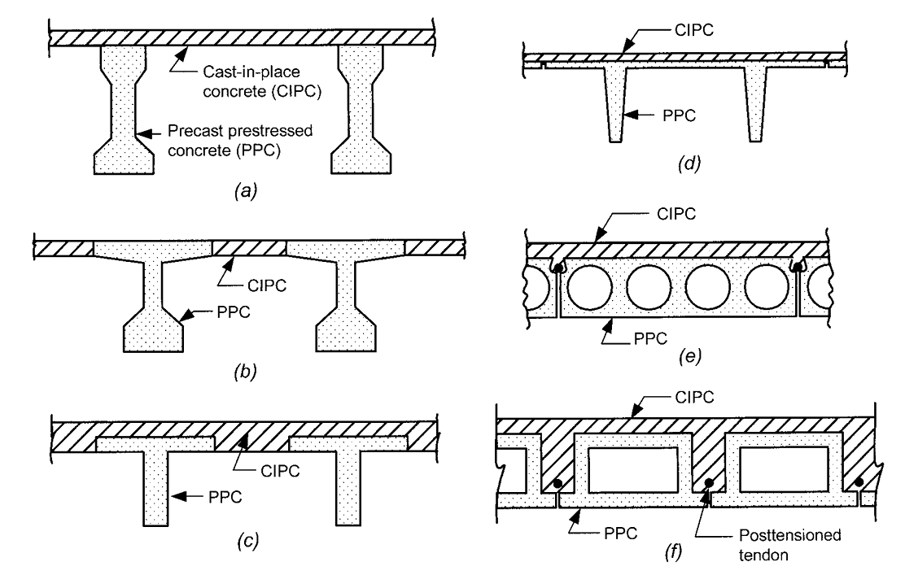
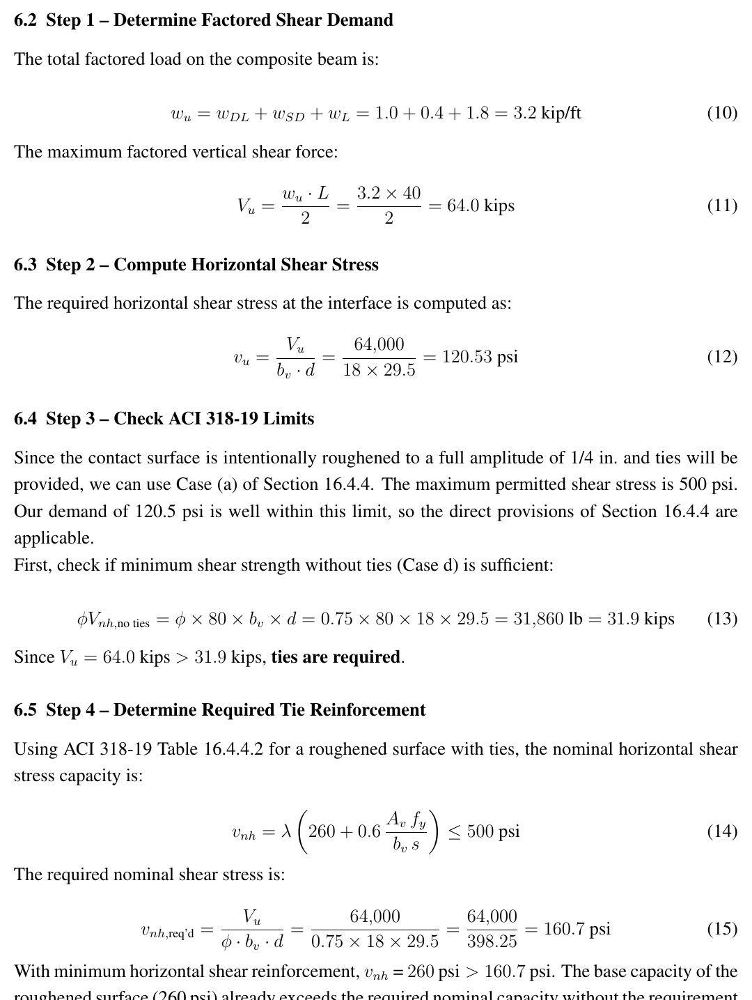
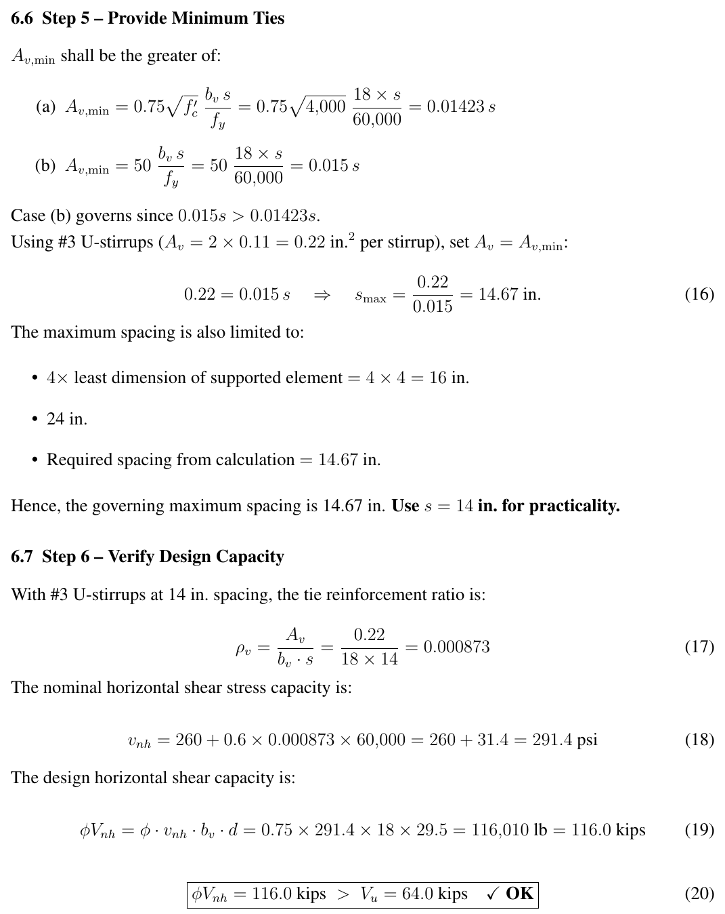

Horizontal shear design of composite prestressed beams
Composite prestressed members rely on shear transfer between the precast element and its cast-in-place topping. This project examines the interface behavior needed for the two components to act together under bending.


I reviewed the mechanics of horizontal shear transfer and the factors affecting interface capacity: surface roughness, concrete strength, reinforcement crossing the interface, normal force and surface condition. The report applies ACI 318-19 Section 16.4 and discusses surface preparation, tie anchorage and construction sequence.
The worked example considers a 40 ft simply supported PCI BT-28 girder with 6,000 psi concrete, a 4 in topping with 4,000 psi concrete, and an interface roughened to 1/4 in. For a factored support shear of 64.0 kips, minimum interface reinforcement was sufficient. The selected detail was #3 U-stirrups at 14 in, with a calculated design capacity of 116.0 kips.



